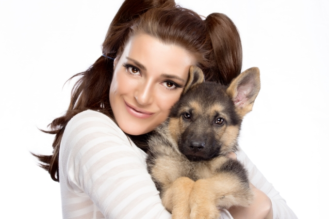
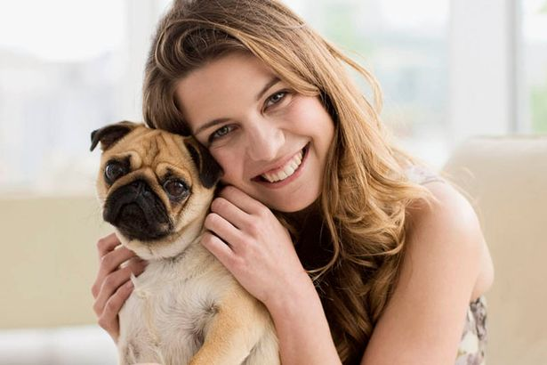

Erin Hart
Founder & Chief Executive Officer.
Erin Hart is the founder and CEO of Durham House of Pets, which she started in 2007.
During the store’s early years, Erin acted as the only one worker for the entire operation of store.
Molly Mckay
Chief Financial Officer & Chief Operating Officer
Molly leads the Durham House of Pets as CFO and COO with 9 years of experience in helping build new business and transforming old ones.

Lynn Roland
Our Veterinarian
She has been working here for 8 years, and she have saved many animal lifes through her patience and love.
She works hard, but she doesn’t take herself too seriously, and she likes what she does and laughs a lot.